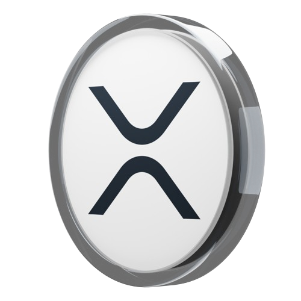

O XRP é uma criptomoeda desenvolvida pela Ripple Labs Inc. e foi lançada em 2012 como parte do sistema RippleNet, uma plataforma de pagamento global.
- O XRP foi projetado para ser um ativo digital destinado a facilitar pagamentos transfronteiriços rápidos e de baixo custo.
- Ao contrário do Bitcoin, que possui um limite máximo de 21 milhões de moedas, o XRP foi pré-minerado com um suprimento total de 100 bilhões de unidades.
O Jogo dos Riscos e Oportunidades
O XRP é frequentemente classificado entre as principais criptomoedas em termos de capitalização de mercado. Seu preço e valor de mercado podem ser altamente voláteis devido a vários fatores, incluindo notícias sobre regulamentação, adoção institucional e desenvolvimentos na tecnologia Ripple.

Illustration
Quanto mais líquido for o mercado (ou seja, quanto mais facilmente os ativos podem ser comprados ou vendidos sem afetar significativamente o preço), menos volátil tende a ser o ativo.